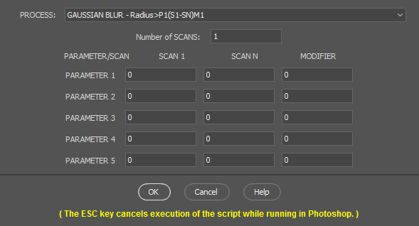
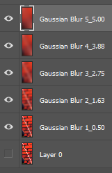

PROCESS_PARAMETER_SCANNER - This Photoshop Script allows the user to run of
a series of scans with changing parameters for the following PROCESSes:
- Gaussian Blur - Radius > P1(S1-SN)M1,
- HighPass - Radius > P1(S1-SN)M1,
- Median - Radius > P1(S1-SN)M1,
- Unsharp Mask - Radius > P1(S1-SN)M1, Percent > P2(S1-SN)M2,
Threshold > P3(S1-SN)M3,
- Gamma/Exposure - Gamma > P1(S1-SN)M1, Exposure > P2(S1-SN)M2,
Offset > P3(S1-SN)M3.
where: P1, P2, P3, P4, and P5 are Parameters required by the PROCESS,
S1 and SN are the first and last users definition of the Parameters and M1,
M2, M3, M4, and M5 are modifiers telling the shape of the interpolation,
LINEAR or POWER, between S1 and SN for the scans. LINEAR interpolation is
the default. M = 0 or 1 is Linear and other positive values represent
powers. This document and the script do not know anything about the
Parameters so limited checking for validity is performed. Please review the
usage of the parameters in the PROCESS documentation.
|
| USAGE PARAMETERS |
| ITEM |
FUNCTION |
User INPUT |
INPUT Size (px) |
OUTPUT Size(px) |
EXT. |
|
| Process Parameter Scanner |
Allows the user to run of a series of scans with changing
parameters for various processes. |
PROCESS_PARAMETER_SCANNER.pdf |
Width by height. |
Width by height. |
jsxbin |
|  |
| Number of SCANS |
| The number of times N that the
PROCESS is executed. Each execution uses a modified M
interpolation of parameters between Scans 1 and N. Linear
interpolation is the default. |
| PARAMETER-1 |
SCAN 1 |
SCAN N |
MODIFIER |
|
- Gaussian Blur - Radius,
- HighPass - Radius,
- Median - Radius,
- Unsharp Mask - Radius,
- Gamma/Exposure - Gamma.
|
- Gaussian Blur - Radius,
- HighPass - Radius,
- Median - Radius,
- Unsharp Mask - Radius,
- Gamma/Exposure - Gamma.
|
- Gaussian Blur - Radius,
- HighPass - Radius,
- Median - Radius,
- Unsharp Mask - Radius,
- Gamma/Exposure - Gamma.
|
| PARAMETER-2 |
SCAN 1 |
SCAN N |
MODIFIER |
|
- Unsharp Mask - Percent
- Gamma/Exposure - Exposure.
|
- Unsharp Mask - Percent
- Gamma/Exposure - Exposure.
|
- Unsharp Mask - Percent
- Gamma/Exposure - Exposure.
|
| PARAMETER-3 |
SCAN 1 |
SCAN N |
MODIFIER |
|
- Unsharp Mask - Threshold
- Gamma/Exposure - Offset.
|
- Unsharp Mask - Threshold
- Gamma/Exposure - Offset.
|
- Unsharp Mask - Threshold
- Gamma/Exposure - Offset.
|
| PARAMETER-4 |
SCAN 1 |
SCAN N |
MODIFIER |
|
|
| PARAMETER-5 |
SCAN 1 |
SCAN N |
MODIFIER |
|
|
| PROCESS |
- Gaussian Blur,
- HighPass,
- Median,
- Unsharp Mask,
- Gamma/Exposure.
More PROCESSes may be added at a later time.
ACR - Saturation, Vibrance,
Clarity,
PS - Displace, Color Mixer, and
Offset have been suggested.
|
| OK/CANCEL/HELP |
|
OK - Start script execution using parameters set in the above
fields.
CANCEL - Cancel the use of the script before running and
return to Photoshop. The ESC key cancels execution of the
script while running in Photoshop.
HELP - Open the PDF help file.
|
|
| RECOMMENDED SCRIPT USAGE |
|
Typical usage is GAUSSIAN BLUR with number of SCANs = 5, Radius at
P1S1 = 0.5, and at P1SN = 5.0.
|
| OUTPUT IMAGES |
|

|
The Layer name (PROCESS 00N_a.b/c/e.f/g/i.j) is the PROCESS name,
followed by a leading zero filled counter from 1 to the number of
scans, followed by and underscore "_", and then followed by
the local values P1 (a.b), P2 (c), P3 (e.f), P4 (g), and P5 (i.j)
separated by "/" which were used by the PROCESS.
Example: GAUSSIAN BLUR 3_2.75 for less than 10 scans(layers) and
03_2.75 for 10 or more scans.
|
| SAVE TO FILE |
If saving to a file, it is highly
recommended that the file format does not use lossy compression.
PSD/PSB or TIF formats are probably the best with PNG24 next. |
| INSTALLATION/REMOVAL |
This script should work on Photoshop
versions CS6 and CC onwards and for both Windows and MAC.
Might also work with Photoshop Elements. Someone should try it.
Please.
The Script filename is PROCESS_PARAMETER_SCANNER.jsxbin and will be
loaded to a folder with mostly *.jsx files.
The Help filename is PROCESS_PARAMETER_SCANNER-HELP.pdf and should be
placed in the same folder as the Script file. |
MAC OS X foldername: PSCC 2018:
Users/[username]/Library/Preferences/Adobe Photoshop CC 2018
Settings
|
WINDOWS 10 foldername: PSCC 2018:
C:\Program Files\Adobe\Adobe Photoshop CC
2018\Presets\Script
|
| COPYRIGHT |
|
RON CHAMBERS COPYRIGHT 2018
PROCESSING PARAMETER SCANNER LICENSE AND COPYRIGHT
Ron Chambers, rechmbrs@gmail.com
February 2018
Release of PROCESS_PARAMETER_SCANNER.jsxbin. The jsxbin routines are JavaScripts scripts for Adobe Photoshop. Compilation and rules for coding were set by Adobe ExtendedScript IDE.
This program is free software; you can redistribute it and/or modify it under the terms of the GNU General Public License as published by the Free Software Foundation; either version 2 of the License, or (at your option) any later version.
This program is distributed in the hope that it will be useful, but WITHOUT ANY WARRANTY; without even the implied warranty of MERCHANTABILITY or FITNESS FOR A PARTICULAR PURPOSE. See the GNU General Public License for more details.
|
|